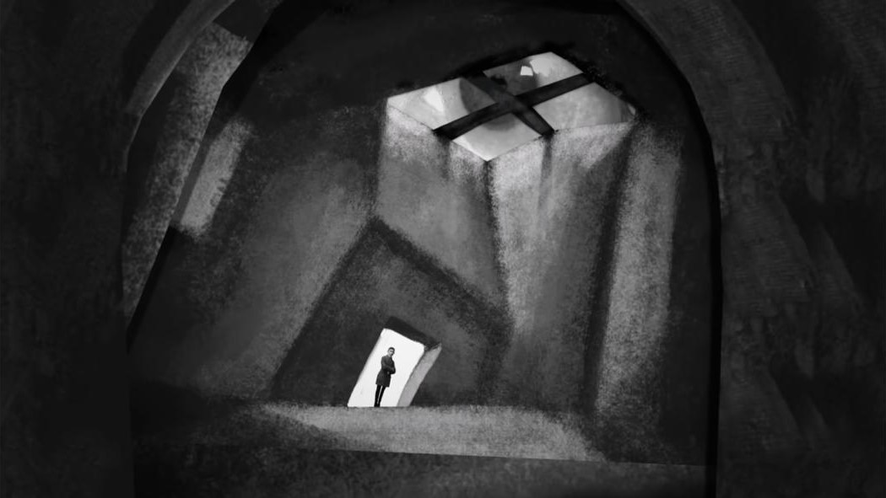
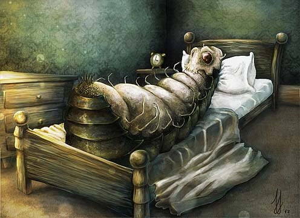

كاتب تشيكي يهودي كتب بالألمانية، رائد الكتابة الكابوسية. يُعدّ أحد أفضل أدباء الألمان في فن الرواية والقصة القصيرة تُصنّف أعماله بكونها واقعيّة عجائبية. عادةً ما تتضمّن قصصه أبطالاً غريبي الأطوار يجدونَ أنفسهم وسطَ مأزِقٍ ما في مشهدٍ سرياليّ، يُعزى ذلك للمواضيع النفسية التي يتناولها في أعمالِه مثل الاغتراب الاجتماعي والقلق والذعر والشعور بالذنب والعبثيّة. أكثر أعماله شُهرةً هي رواية المسخ، والمحاكمة، والقلعة. وقد ظهر في الأدب مصطلح الكافكاوية رمزاً إلى الكتابة الحداثية الممتلئة بالسوداوية والعبثية.
ولد كافكا في 3 يوليو 1883 في براغ التي كانت آنذاك جزءاً من الإمبراطورية النمساوية المجرية لعائلة ألمانية من الطبقة الوسطى تنحدر من أصول يهودية أشكنازية. عمل موظّفاً في شركة تأمين حوادث العمل، مما جعله يُمضي وقت فراغه في الكتابة. على مدار حياته، كتب كافكا مئات الرسائل للعائلة والأصدقاء المقربين، بما في ذلك والده، الذي كانت تربطه به علاقة متوترة وسيئة. خَطب بضعة نساءٍ لكن لم يتزوّج أبداً. توفي عام 1924 عن عمر يناهز الـ40 بسبب مرض السل.
[1]

المحاكمة
المحاكمة، أو كما تترجم في بعض الترجمات بـ«القضية»، التي ترمي بظلالها على ملامح القهر والظلم والعبثية والعدمية في حياة الإنسان، نجد أنه من الصعب الحديث عنها بشكل كامل؛ لأنها –مثل بقية أعمال كافكا- يمكن أن تُقرأ من عدة زوايا، كما يمكن أن تفسر تفسيرات متباينة جداً.
تتناول الرواية في مضمونها قصة شخص يدعى جورزيف ك، تبدأ باستيقاظه في يوم ليجد بالباب رجلين يخبرانه بأنه مطلوب للمحاكمة، ولكنهما لم يوضحا أية قضية يتهماه فيها.
وفي أية جريمة يجري استجوابه، ومع تطور الأحداث وتغيرها وفشل «جوزيف ك» في معرفة جريمته يبدأ في الدفاع عن نفسه بشتى الطرق هو ومحاميه؛ لكن ما يواجهانه من صعوبات يتمثل في عدم معرفة ما هي جريمته، فكيف لفرد أن يدافع عن براءته وحياته في حين يجهل ما ارتكبه في الحياة.
لم يكن عدم معرفة الجريمة عائقاً أمام كافكا لاستكمال أحداث روايته التي امتدت على مدار ثمانية فصول، حيث توالت الأحداث بخفة ورشاقة أدبية مميزة، لا سيما مع انسحاب المحامي وعدم تمكنه من إنقاذ «ك»، ليبقى «ك» وحده أمام منظومة قضائية طاغية لا تخبره لماذا تحاكمه وإلى متى يستمر الوضع على هذه الحال؛ حتى تتسلل روح الإحباط والاكتئاب إلى «ك».
وبعد أن كان رجلاً نزيهاً يرأس أحد البنوك الكبيرة، حولته المنظومة القضائية إلى رجل متلاعب يحاول أن يُخرج نفسه من المأزق ويلجأ إلى سُبل غير شرعية، وكأن الرواية تقول
الحياة الفاسدة هي التي تجعلنا فاسدين، وليس نحن من نكون فاسدين منذ لحظة البداية
[2]

المسخ
تبدأ القصة بتاجر مسافر اسمه جريغور سامسا، الذي يستيقظ ليجد نفسه قد تحوّل إلى حشرة بشعة. في السطر الأول من " التحول يصدم " كافكا " القارئ بهذا التحول الرهيب حيث يقول : " استيقظ جريجور سامسا ذات صباح بعد أحلام مزعجة، فوجد نفسه قد تحول في فراشِه إلي حشرة هائلة الحجم " . " جريجور " ، هذا العامل البسيط، البائس بوظيفته التي تجبره علي الاستيقاظ مبكراً ليلحق بقطاراته كي يجوب المدن بائعاً متجولاً، في شقاء يومي متكرر، بالكاد يحقق له دخلاً يستطيع به أن يعول أسرته . ويجري " كافكا " هذا الحدث غير الواقعي، وغير محتمل الوقوع، في مجاري واقعية تماماً، موهماً القارئ بصدق هذا الكابوس، والذي تمنَّى " جريجور/ المتحول " أن يكون هذا مجرد حلماً مزعجاً سرعان ما يستيقظ منه، لكنه أيقن بتوالي الأحداث استحالة أمنياته . عندما ترتعش أطرافه المفصلية الحشرية في محاولاته اليائسة للنهوض من فراشه حيث تسبب له الألم، وعندما يضطر للرد علي أسرته القلقة بسبب تأخره في النوم علي حالته الجديدة، ويصافح مسمعيه هذا الصوت الرفيع الغريب الذي هو بالتأكيد صوته غير البشري، ولا تقتصر مأساة هذا البائس فيما بعد في عجزه عن المواءمة مع هذا التحول القدري، بل تتعداه إلي موقف الأسرة السلبي منه ـ فيما عدا أخته التي كانت تؤثره في محنته ـ حين تبتعد عنه مع مرور الوقت وتفاقم أزمته الوجودية، ثم هي تدفعه للاختفاء بعيداً عن الأعين، ثم وهي تبلور مشاعرها لمشاعر باردة وغير إنسانية بالمرَّة، برغبة جماعية في التخلص منه، حتى ولو كان الثمن هو الموت، فالارتباط المادي الذي يربطهم به قد انقطع صبيحة التحول الحشري مع توقفه عن العمل، بالفعل يموت " جريجور " ، ماذا يمكنه أن يفعل غير الموت ؟، بعد أن أرهق " كافكا " القارئ بالتفصيلات الحياتية اليومية الكابوسية، التي تؤكد أن مجرد البقاء علي هذه الصورة أمراً مرعباً وغير محتمل، وأن الانتحار هو الحل الوحيد الممكن
[3]
كونه ترك نفسه يموت، أعاد خلق هويته البشرية، ولكونه انمسخ كان يجب أن يموت، و بعدها يصبح كل شيء على مايرام


 By Fai
By Fai